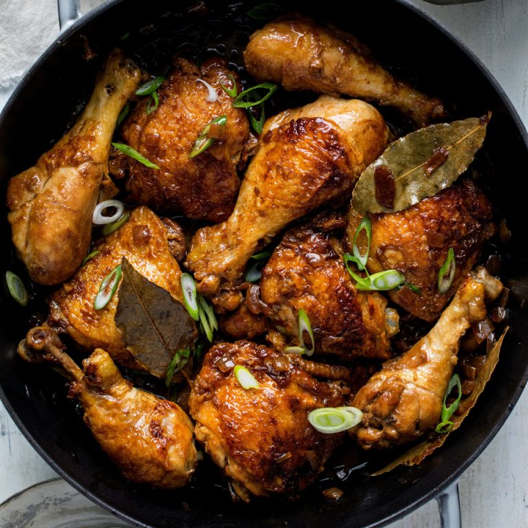
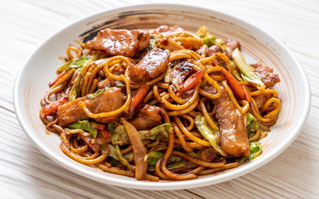

Seja para acompanhar uma janta ou almoço nos finais de semana

Comida tradicional
Ingrediente
6 coxas de frango
1/4 xícara de molho de soja
1/2 xícara de vinagre branco
8 dentes de alho amassados e descascados
1 colher de chá de pimenta inteira
3 folhas de louro secas
3 colheres de sopa de óleo
1 1/2 xícaras de água
Açúcar mascavo (opcional)
Cebola verde em fatias (opcional)
MODO DE PREPARO
Em uma tigela, combine os ingredientes listados até as 3 folhas de louro secas e deixe marinar por pelo menos 1 hora – o melhor se você puder fazer isso durante a noite. (Se apenas por uma hora, tente virar as coxas para o outro lado no 30º minuto para que todo o frango esteja bem marinado no final da hora. Caso contrário, se você estiver com pressa, também bem se você não pode marinar.);
Separe os pedaços de frango apenas da marinada, mas guarde a mistura da marinada para usar mais tarde;
Aqueça o óleo em uma frigideira antiaderente grande. Quando estiver quente o suficiente, sele os pedaços de frango até dourar (cerca de 1 minuto de cada lado apenas para dourar; você não precisa cozinhar o frango ainda);
Despeje a marinada que você reservou na etapa 2 na frigideira. Adicione a água também;
Leve tudo para ferver e depois abaixe o fogo para médio ou baixo. Tampe a frigideira e deixe ferver por cerca de 30 minutos (você pode virar o frango em torno da marca dos 15 minutos para que o outro lado fique encharcado no molho também);
A essa altura, o molho deve estar espesso e rico; se não estiver, pode colocar o fogo mais alto para que o molho seja reduzido mais rápido. De vez em quando, ajuda a virar e regar o frango com seu próprio molho para ajudar a adicionar um pouco mais de cor aos pedaços de frango;
assim que o molho parecer uma cobertura, experimente o molho e veja se está do seu agrado. Se você quiser torná-lo mais doce, acrescente cerca de uma colher de chá de açúcar mascavo (opcional);
Massa pronta

Nada que uma massa fina feita com acompnhamentos de legumes e verduras, uma massa fácil de fazer em nosso cotidiano
INGREDIENTES
300 g de espaguete
1 colher (sopa) de óleo
1/2 maço pequeno de couve-flor
400 g de carne cortada em tiras
1 cenoura cortada em rodelas
1 colher (sopa) de amido de milho, dissolvido em 50 ml de água
1 cebola grande cortada em pedaços médios
1/2 maço pequeno de brócolis
10 colheres (sopa) de molho shoyu
100 g de champignon
250 ml de água
acelga a gosto
MODO DE PREPARO
Cozinhe o macarrão em ponto al dente e reserve.
Em uma panela, adicione o azeite, a cebola, a carne e refogue bem.
Adicione o molho shoyu e cozinhe por 3 minutos em fogo médio.
Acrescente mais água, aguarde levantar fervura e adicione o amido de milho
Acrescente mais água, aguarde levantar fervura e adicione o amido de milho
Mexa até engrossar, abaixe o fogo e adicione o champignon, a couve-flor, o brócolis e a cenoura.
Cozinhe por 8 minutos e acrescente, por último, a acelga e o macarrão.
Misture bem, acerte o sal e tampe a panela por mais 1 minuto.